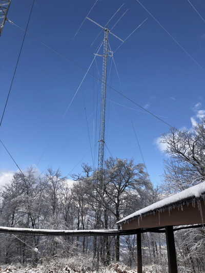

Antennas
The mountaintop station has many antennas from which to choose. We have rotatable Yagis and fixed position dipoles. We have resonant antennas on 160m, 80m, 40m, 20m, 17m, 15m, 12m, 10m, and very soon, 6m. This page describes them.
Towers
With the help of K3ARL’s team from Centre Communications, the club maintains four towers.
60 foot tower
- 4 element Mosley triband (10, 15, 20m + WARC bands - 12 and 17m) Yagi
- 40m dipole
100 foot tower
- VHF 4 element vertical orientation Yagi + rotator
- 2 VHF fixed direction vertical orientation 6 element Yagis (W3YA system)
- VHF 2m vertical polarization
20m dipole
80 foot tower
- 4 element triband (10, 15, 20m + WARC) Yagi
- Rotor
160m dipole40m dipole

60 foot tower
- VHF vertical
- 80m dipole oriented N/S
Antennas by band
10, 12, 15, 17, 20m
- 4 element triband (10, 15, 20m + WARC bands - 12 and 17m) Yagi (on 60 foot tower)
- 4 element Mosley Classic triband (10, 15, 20m + WARC bands - 12 and 17m) Yagi (on 80 foot tower) (new in 2023)
Rotator and Controller
Both Mosley triband antennas are moved by (new in 2023) Yaesu G-2800 rotators.
A Green Heron RT-21 Rotator Controller controls each Yaesu rotator.
Manuals
Mark K0LO is configuring a PC server so that all of the NARC computers can control the rotators.
40m
Dipole (on 100 foot tower )- Currently out of service.
Dipole (on 80 foot tower)- Currenlty out of service.
The club has two 80m/40m fan dipoles ready to install. We will likely install the first one on the 60 foot tower once the feedline has been replaced.
The location of the second 80m/40m fan dipole is to be determined.
80m
Dipole, CW cut, on 60 foot tower.- Currently out of service.
Dipole, Phone (75m) on other 60 foot tower.- Currently out of service.
Feedlines for these antennas need to be replaced.
160m
Dipole on 80’ north tower.- Currently out of service.
The 160m dipole is out of service. A replacement has been acquired. The club hopes to install the replacement in Spring 2025.
We believe that the feedline needs to be replaced as part of the upgrade operation.
VHF/UHF
- The club has acquired a 6m yagi for future installation on the 100 foot tower.
- The K3YV UHF repeater has its transmit and receive antenna on the 60 foot tower.
- The club does not have resonant antennas for 30 or 60m.
Future plans
- The club has acquired a 6m Yagi. We plan to install that antenna on the 100 foot tower at a future date.
- There is a vertically polarized 2m Yagi on top of the 100 foot tower. The 6m antenna may replace the 2m antenna, or we may service or replace the 2m antenna.
- There has been some discussion about installing an HF receive antenna, and about building or installing antennas for 60m and 30m.
- The club has acquired a 28 foot aluminum crank-up tower. This will likely be installed for temporary antenna experiments in Spring 2025.
Antenna use

- Confirm that it is impossible for your transceiver to transmit while you are connecting your transceiver’s (color-tagged) feedline to one of the antenna connectors.
- Switch antennas manually by connecting your radio feedline from array of antenna connectors on the north wall.
- When you leave the shack, disconnect the transceiver feedline from the antenna you were using and hang it on one of the hooks on the wall using the attached paracord.